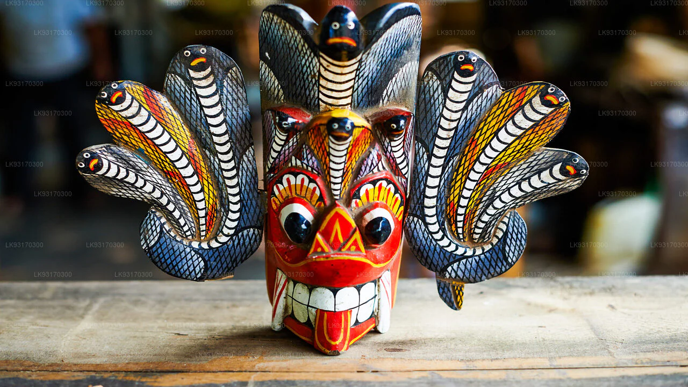

Church Street & Leyn Baan
The best lanes for boutique restaurants, rooftop dining, and coffee stops.
Stroll cobblestone lanes inside a living Dutch colonial fortress, discover boutique galleries and rooftop cafés, and watch the Indian Ocean crash against 400-year-old ramparts at sunset.



Everything you need is within the fort walls — from boutique cafés and fine dining to ATMs, pharmacies, and tuk-tuk pickups at the main gate.
The best lanes for boutique restaurants, rooftop dining, and coffee stops.
Convenient for tuk-tuks, ATMs, and transport links to Unawatuna and Mirissa.
Great for handmade goods, local snacks, gem stores, and linen boutiques.
Just 3 km from the fort, Unawatuna is the ideal place to decompress after a morning of walking — with beachside cafés, calm water, and easy access to Jungle Beach cove.
Laid-back spots for fresh juices, seafood, and a post-walk rest by the water.
A secluded cove reached by a short forest path — ideal for snorkelling and quiet swims.
Short shaded trails through the Rumassala forest above Unawatuna with ocean views.
The fort's outer walls offer a series of natural rest points — shaded benches, grassy bastions, and open ocean outlooks perfect for pausing between explorations.
The best sunset spot on the ramparts — open ocean on three sides with room to sit.
A quieter stretch near the lighthouse with shaded grass and sea breeze.
Oldest Portuguese bastion — a calm green pocket for a short rest away from crowds.